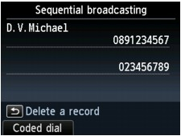

This machine allows you to prepare for sending the same document to multiple recipients (max. 101 recipients for MX880 series, 21 for MX420 series) in one operation. The recipients can be specified with the Numeric buttons, coded speed dial, and group dial in combination.
The following number of recipients can be specified in combination.
-
The recipient registered to the machine (coded speed dial or group dial):
Up to 100 for MX880 series
Up to 20 for MX420 series
-
Dialing using the Numeric buttons or redialing:
1
 Important
Important-
It may be possible that faxes will reach unintended recipients due to the misdialing or incorrect registration of fax/telephone numbers. When you send important documents, it is recommended that you send them one by one after speaking on the telephone. For details, see Sending a Fax after Speaking on Telephone.
 Note
Note-
If you frequently send documents to the same group of recipients, you can group these numbers for group dialing. This will allow you to send documents to all the recipients in the group by simply pressing a few buttons.
-
Make sure that the machine is turned on.
-
Press the FAX button.
The Fax standby screen is displayed.
-
Load documents on the Platen Glass or in the ADF.
-
Adjust the scan contrast and resolution as necessary.
Note-
For details on how to adjust the scan contrast and resolution, refer to Faxing.
-
-
Specify all recipients' fax/telephone numbers one by one.
Before finishing specifying all recipients' fax/telephone numbers, do not press the Color button or the Black button.
-
By specifying with the recipient registered to the machine (coded speed dial or group dial):
Press the Coded Dial button, select a recipient, then press the OK button.
-
By dialing using the Numeric buttons:
Use the Numeric buttons to enter the recipient's fax/telephone number, then press the left Function button.
Note-
If FAX number re-entry in Security control under FAX settings is set to ON, use the Numeric buttons again to enter the number.
-
-
By redialing:
Press the Redial/Pause button, use the

 button to select the number you want to dial, then press the OK button.
button to select the number you want to dial, then press the OK button.
The Sequential broadcasting screen is displayed after specifying the multiple recipients.
Note-
You can review the numbers you have entered by pressing the
button on the Sequential broadcasting screen. -
Pressing the Back button allows you to delete the recipient's number you entered last.
-
-
Press the Color button for color transmission, or the Black button for black & white transmission.
Important-
Color transmission is available only when the recipient's fax machine supports color faxing.
-
Note-
To cancel sequential broadcasting, press the Stop button. To cancel a fax transmission while it is in progress, press the Stop button, then follow the instructions on the LCD.
-
If documents remain in the ADF after the Stop button is pressed while scanning is in progress, Document in ADF. Press OK to eject document. is displayed on the LCD. Press the OK button and follow the instructions on the LCD to automatically feed out the remaining documents.
-
When you press the Stop button, fax transmission to all the recipients specified in step 5 will be canceled. You cannot cancel a fax transmission to only one recipient.